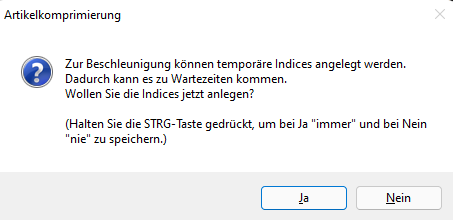
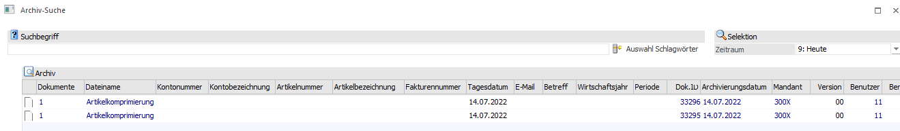
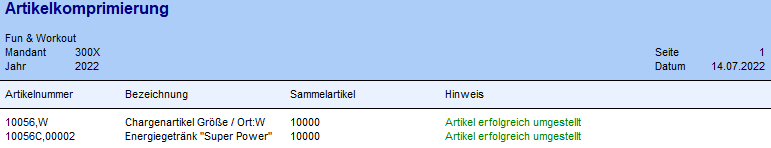
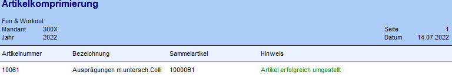

Nachdem eine Datenstandsicherung abgelegt wurde und die zu komprimierenden Artikel selektiert wurden, kann man mit der Artikelkomprimierung beginnen. Dies geschieht über F5 oder OK-Button, gefolgt durch folgende Warnung:
Wird die Abfrage

mit JA bestätigt, werden temporäre Indices gesetzt, die die Umstellung bei großen Datenständen beschleunigen. Danach werden Artikel wie folgt komprimiert:
ü Bei Produktionsartikeln und HSL werden die Einträge in den Stücklisten (Dispotabelle/wird produziert, Stücklistentabelle, Tätigkeiten) in allen Wirtschaftsjahren gelöscht.
ü Wenn der Artikel Lagerwerte enthält, werden diese auf den Sammelartikel gebucht. Das betrifft die Tabellen: Lagerwerte (T030/V164), Periodenwerte (T308). Falls der Sammelartikel dieselbe Lagerortstruktur wird der zu löschende Artikel hat, werden auch die Lagerortwerte (T299) und EB-Werte (T303) auf den Sammelartikel gebucht.
ü Die jahresabhängigen Tabellen T083, T215, T318, T343 werden in allen betroffenen Wirtschaftsjahren mit demselben Stammdatenjahr umbenannt.
ü Die Stammdatenjahr-Tabellen T084, T319, T326, T228, T332, T338, T350 werden im Stammdatenjahr umbenannt.
ü Die jahresunabhängigen Tabellen T014, T026, T039, T324, T342, T170, T077, T105, T042, T337, T038, T040, T046, T329, T185 werden in allen Jahren umbenannt.
ü Folgende jahresabhängige Tabellen werden im aktuellen Jahr gelöscht und bleiben in den Vorjahren: T024, T023, T037, T031, T030, T057, T070, T355, T359, T043, T308 (der Vorjahre), T096, T299, T303, T371, T338, T341 (macht keinen Sinn vor allem bei einem unterschiedlichen Datum), T118
ü Reservierungszeilen in der T014 werden übernommen, falls der Sammelartikel das Reservierungsflag auch verwendet, sonst werden sie gelöscht.
ü Kontraktzeilen und Kontraktpreise werden in allen Wirtschaftsjahren gelöscht.
ü Bei Hauptartikel mit Ausprägungen wird in der T026 immer der gesamte Block (aufgeteilter Hauptartikel + alle Ausprägungen) umgestellt. Dabei wird der Hauptartikel auf den Sammelartikel umgestellt und die Ausprägungszeilen gelöscht. Es kann aber auch die Hauptartikelzeile gelöscht und die Ausprägungszeilen behalten werden. Dafür gibt es die Option "Ausprägungen im Beleg belassen"
ü Wenn die Ausprägungszeilen gelöscht werden und nur die Hauptartikelzeile übrigbleibt, wird der Belegkey bei Verweisen in diversen Tabellen gelöscht (T083, T040, T042, T125).
ü Des Weiteren werden die T014, die
Kommissionierungszeilen in der T083 und die kommissionierte Menge im
Artikelstamm gelöscht. Falls es Dispozeilen für eine der Ausprägungen gibt, die
nachher beim Hauptartikel fehlen, wird ein Hinweis auf das Rebuild der T014 im
Protokoll und bei der abschließenden Meldung angezeigt.
Wenn die Option
"Ausprägungen im Beleg belassen" aktiviert wird, bleiben die Verweise, die
Reservierungs- und die Kommissionierungszeilen erhalten.
ü Wenn eine der Ausprägungen nicht inaktiv ist, wird trotzdem der Hauptartikel und alle seine Ausprägungen umgestellt (so wie beim manuellen Löschen eines Hauptartikels im Artikelstamm)
Hinweis 1
Der Artikel wird danach im Stammdatenjahr reorganisiert. In den Vorjahren bleibt der Artikel erhalten!
Hinweis 2
Während der Komprimierung wird ein Protokoll ausgegeben, auf dem die umgestellten Artikel
aufgelistet werden. Das Protokoll der Umstellung wird im Archiv gespeichert.


